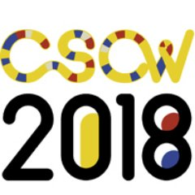

Gender Transition and Social Media
Social computing technologies, such as social media sites, often privilege people who fit within expected and unchanging categories.
Thus, designing technology and social media flexible enough to allow for representation of complex identities that emerge as people embark on major life transitions, such as changing gender, is a particular challenge.
Because little is known about how transgender people navigate gender transition on social media, this work seeks to understand challenges and opportunities related to this experience.
Examining the relationships between issues including disclosure, self-presentation, emotional wellbeing, and social support on social media sites for transgender and non-binary users is fundamentally important on its own accord, but can also inform technology design that will benefit people who struggle with navigating a wide range of major identity changes online.
Selected Publications
 My new paper "Tumblr was a Trans Technology: The Meaning, Importance, History, and Future of Trans Technologies,"
co-authored with Avery Dame-Griff, Elias Capello, and Zahari Richter, was published
in Feminist Media Studies.
My new paper "Tumblr was a Trans Technology: The Meaning, Importance, History, and Future of Trans Technologies,"
co-authored with Avery Dame-Griff, Elias Capello, and Zahari Richter, was published
in Feminist Media Studies.
 I'm very excited that my paper "Mapping Gender Transition Sentiment Patterns via
Social Media Data: Toward Decreasing Transgender Mental Health Disparities" was
accepted for publication in the Journal of the American Medical Informatics Association (JAMIA),
as part of the forthcoming special issue on "Health Informatics and Health Equity:
Improving Our Reach and Impact."
I'm very excited that my paper "Mapping Gender Transition Sentiment Patterns via
Social Media Data: Toward Decreasing Transgender Mental Health Disparities" was
accepted for publication in the Journal of the American Medical Informatics Association (JAMIA),
as part of the forthcoming special issue on "Health Informatics and Health Equity:
Improving Our Reach and Impact."
CSCW 2018 Best Paper Honorable Mention!
 My paper "Social Media as Social Transition Machinery" received a Best Paper Honorable Mention award at CSCW 2018!Trans Identity and Digital Spaces
(part of "A conversation: Queer digital media resources and research")
Oliver L. Haimson
First Monday (special issue on Queer Internet Studies) Trans Identity and Digital Spaces
Feature article in XRDS Magazine
 I have a feature article in the new issue of
XRDS:
Crossroads, The ACM Magazine for Students, titled
"Digital
and Physical Barriers to Changing Identities."
I have a feature article in the new issue of
XRDS:
Crossroads, The ACM Magazine for Students, titled
"Digital
and Physical Barriers to Changing Identities."
Paper accepted for ICWSM 2017
 I had a paper accepted for ICWSM 2017,
titled "Changes
in Social Media Affect, Disclosure, and Sociality for a Sample of Transgender Americans
in 2016’s Political Climate," co-authored with Gillian Hayes.
I had a paper accepted for ICWSM 2017,
titled "Changes
in Social Media Affect, Disclosure, and Sociality for a Sample of Transgender Americans
in 2016’s Political Climate," co-authored with Gillian Hayes.
 I'm so excited to announce that my paper "Digital Footprints and Changing Networks During Online Identity Transitions,"
co-authored by Jed Brubaker, Lynn Dombrowski, and Gillian Hayes, received a
Best Paper Honorable Mention award at
CHI 2016!
I'm so excited to announce that my paper "Digital Footprints and Changing Networks During Online Identity Transitions,"
co-authored by Jed Brubaker, Lynn Dombrowski, and Gillian Hayes, received a
Best Paper Honorable Mention award at
CHI 2016!
 Two papers from our research this summer during my internship at eBay Research Labs
were accepted for CHI 2015:
"Online Inspiration and Exploration for Identity Reinvention" (Oliver Haimson,
Anne Bowser, Edward Melcer, and Elizabeth Churchill) and "On Vintage Values: The
Experience of Secondhand Fashion Reacquisition" (Anne Bowser, Oliver Haimson,
Edward Melcer, and Elizabeth Churchill)! Special thanks to our wonderful participants.
Two papers from our research this summer during my internship at eBay Research Labs
were accepted for CHI 2015:
"Online Inspiration and Exploration for Identity Reinvention" (Oliver Haimson,
Anne Bowser, Edward Melcer, and Elizabeth Churchill) and "On Vintage Values: The
Experience of Secondhand Fashion Reacquisition" (Anne Bowser, Oliver Haimson,
Edward Melcer, and Elizabeth Churchill)! Special thanks to our wonderful participants.
My poster " User Response to Facebook's Custom Gender Options," co-authored by Jed Brubaker, Courtney Loder, Lynn Dombrowski, and Gillian Hayes, was accepted for iConference 2015! As always, special thanks to those who filled out our survey and made this research possible.
CSCW 2015 Best Paper Honorable Mention!
 I'm so excited to announce that my paper "Disclosure, Stress, and Support During Gender
Transition on Facebook," co-authored by Jed Brubaker, Lynn Dombrowski, and Gillian
Hayes, received a Best Paper Honorable Mention award at
CSCW 2015!
I'm so excited to announce that my paper "Disclosure, Stress, and Support During Gender
Transition on Facebook," co-authored by Jed Brubaker, Lynn Dombrowski, and Gillian
Hayes, received a Best Paper Honorable Mention award at
CSCW 2015!